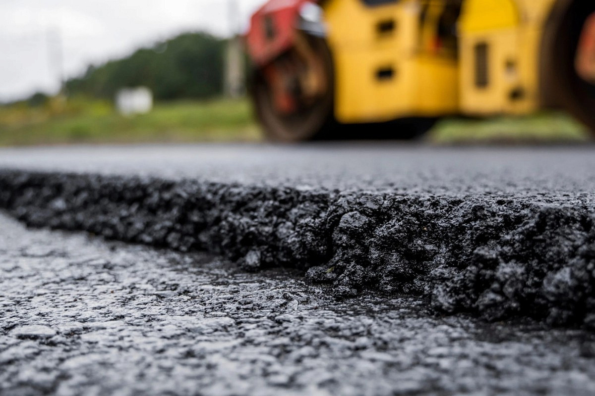

ПРОФЕССИОНАЛЬНОЕ АСФАЛЬТИРОВАНИЕ В МИНСКЕ И ОБЛАСТИ
Полный комплекс работ по укладке асфальта: от подготовки основания до сдачи объекта «под ключ». Гарантия на все виды работ до 3 лет.

Услуги
srhn
zfhznz
zdg
zdgg
О нас
**«Ваше Название»** — это современная, динамично развивающаяся компания, которая уже более [X] лет является надежным партнером в сфере дорожного строительства и благоустройства территорий в Минске и Минской области. Наша миссия — создавать качественное, долговечное и безопасное дорожное покрытие, которое преображает пространство вокруг и делает жизнь людей комфортнее. Мы уверены, что хорошие дороги — это не просто инфраструктура, это лицо города и показатель качества жизни. #### **Наши принципы работы:** * **Качество превыше всего.** Мы строго соблюдаем все требования ГОСТ и СНиП, используем только проверенные материалы и современную технику. На все работы предоставляется гарантия до [2-3] лет. * **Ответственный подход.** Мы несем полную ответственность за каждый этап: от геодезической разметки и подготовки основания до финишной укатки асфальта. Мы не экономим на материалах и технологиях, потому что строим для людей и на decades. * **Скорость и четкость.** Налаженные процессы и собственный парк специализированной техники (асфальтоукладчики, вибрационные и гладковальцовые катки, самосвалы) позволяют нам выполнять работы оперативно и сдавать объекты точно в срок. * **Прозрачность и честность.** Мы всегда подробно консультируем клиентов, предоставляем детальную смету без скрытых доплат и заключаем официальный договор. #### **Почему нам доверяют?** * **Опытная команда.** Нашими специалистами накоплен многолетний опыт работы как с частными заказчиками, так и с крупными коммерческими и государственными объектами. * **Собственная техника и материалы.** Мы контролируем весь процесс от производства асфальтобетонной смеси на собственном АБЗ до ее укладки, что гарантирует высочайшее качество итогового покрытия. * **Комплексные решения.** Мы предлагаем услуги «под ключ»: от демонтажа старого покрытия и вывоза мусора до устройства нового асфальтового полотна с нанесением разметки. * **Индивидуальный подход.** Мы понимаем, что каждый проект уникален. Поэтому мы всегда внимательно слушаем пожелания клиента и предлагаем оптимальное решение под его задачи и бюджет. Мы гордимся тем, что наши дороги, парковки, дворы и площадки служат годами, не требуя ремонта. **«Ваше Название»** — это выбор тех, кто ценит надежность, качество и профессиональный сервис. **Обращайтесь, и мы сделаем вашу территорию идеальной!**